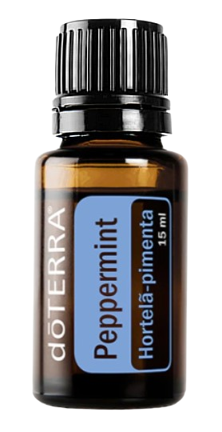
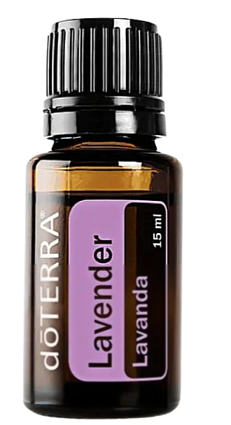

Conhaça os óleos essencias da Doterra
Conheça mais sobre os produtos e suas importâncias.
O que são os óleos essenciais?
Os óleos essenciais Doterra são provenientes de todas as variedades de plantas. Das ervas às árvores, queríamos explorar cada categoria de óleos e explicar como usar este grupo de óleos. Embora existam semelhanças entre os óleos individuais dentro dos grupos, cada óleo também é único.
O óleo essencial Doterra é feito tirando a essência e as principais vantagens de plantas, flores e frutas! Essa marca faz tanto os vidros de óleo quanto os difusores, que são os aparelhos pra usar em casa.
Alguns exemplos de óleos e sua utilidade.
Pepermint.
Seu aroma mentolado e herbáceo pode ser utilizado aromática e topicamente ao longo do dia para elevar o humor e promover um senso de foco. Quando aplicado nas têmporas e na nuca, ajuda a diminuir sentimentos de tensão
Lavanda.
É frequentemente utilizado pra reduzir o aparecimento de imperfeições da pele. Adicione a água do banho para manter afastado o estresse ou aplique na parte de trás do pescoço. Adicione algumas gotas de lavanda nos travesseiros, roupa de cama, ou planta dos pés para promover uma noite de sono repousante.